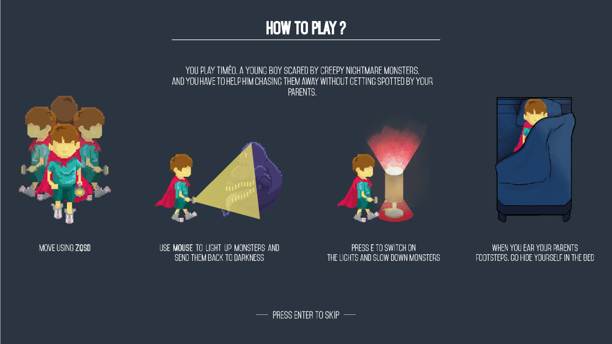

Game Jams
.jpg)
- Jam Names
- Ludum Dare
Global Game Jam
Pride Game Jam
- Platform
- PC
- Role
- Designer
- Development time
- -
Jam from scratch
Doing a Jam for me is always an opportunity to try on new techs, work on my communication skills and having a great experience with passionate developers.
Among the Game Jams done so far, I've mostly worked on the Unity Engine but also had a few times with the Unreal Engine.
Game Jam skills used
- Unity's 2D Sprite Shape & 2D Tilemaps
- Unity's Terrain features
- Camera controller using Unity Cinemachine
- Soft narrative feature
- Low Poly Modeling using 3ds Max
- Integration on Unity and Unreal Engine
- Few rendering settings on Unity
- Game Design documents
Timeo's Lightmare is a 2d video game, made with Unity3d, Timéo is having a nightmare, help him fight spooky monsters with light! But be careful, your parents are around, and will rumble you if you stay up!
The only end for now is to be caught by nightmare or parent. If you have more than one light on when Timeo's parents comes they know that he's not actually sleeping.
Arrow keys are supported.
I participated in the design of the mechanics and the overal tone of the game
Look at the Game Design Document (French writed)
How to play in Timeo's Lightmare